英国脱个欧，炸出一堆新单词
 263
263
我们都知道，这次英国脱欧有一个专门的单词，叫Brexit，是用“英国”(Britain)和“离开”(exit)组合在一起创造出来的新词。而主张脱欧的人，则被称为
brexiter 或 brexiteer。
与之相对应的还有一个用得不那么广泛的词，叫Bremain，同样的是用“英国”和“留下”(remain)的组合。
在今天的公投结果公布以后，推特上最热门的一个段子用的就是这个梗，讲的是其他国家会纷纷效仿Brexit，也和欧盟大家庭告别。
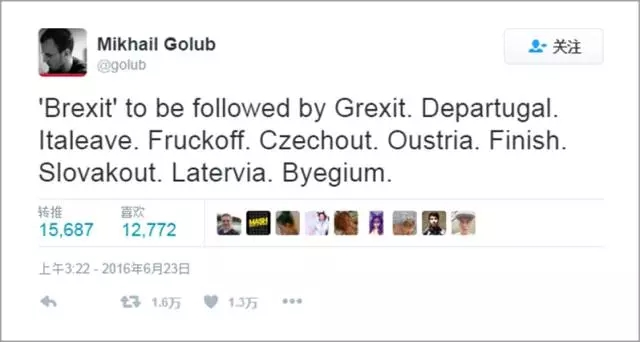
?? Grexit
Greece + exit
希腊变成希“落”
?? Italeave
Italy + leave
意大利变成意大“离”
?? Fruckoff
France + off
法国变成法“客”
?? Departugal
departure + Portugal
葡萄牙变成葡“逃”牙
?? Czecheout
Czech + out
捷克变成捷“帐”
?? Slovakout
Slovakia + out
斯洛伐克变成斯洛伐“客”
?? Oustria
out + Austria
奥地利变成奥地“离”
?? Finish
Finland + finish
芬兰变芬“完”
?? Latervia
later + Latvia
拉脱维亚变拉“脱”维亚
?? Byegium
bye + Belgium
比利时变“拜”利时
?? Germanlonely
Germany + lonely
最后欧盟只剩下了德“孤”，德“一只”
?? See EU later
再见欧盟
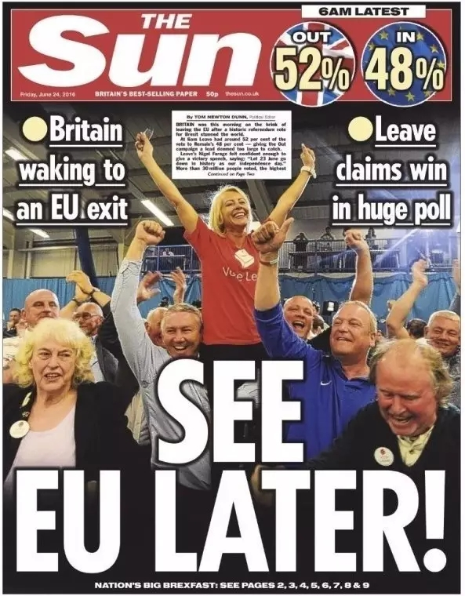
? Europill
欧盟药丸
下面是这次公投的投票结果分布，黄色的是选择留欧的地区，蓝色的则是赞成脱欧的地区。可以看到，苏格兰和北爱尔兰的所有地区都赞成留欧，而英格兰和威尔士的大部分地区则赞成脱欧。但英格兰的几个大城市、尤其是大伦敦地区，则和苏格兰、北爱尔兰一样选择留欧。
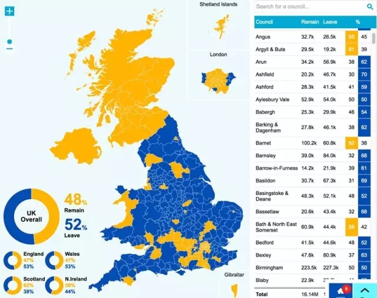
在结果公布后，很多苏格兰人非常失望，表示要重启苏格兰独立、加入欧盟的进程。很多人还畅想苏格兰和这次同样选择留欧的伦敦一起独立，成立一个新的国家：苏格伦。
Scotlond
Scotland + London
在推特上 #Scotlond 甚至已经成为了一个热门标签。
作为一个历史性的事件，英国脱欧的段子非常多。比如英国《金融时报》的一个记者说，“这真是奇怪的一天，首相辞职的新闻重要性竟然只排第三。”
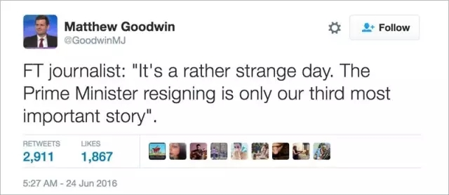
爱尔兰廉价航空公司推出了机票促销，“是时候离开英国了”。
印度人和巴基斯坦人也在用Brexit编段子，不过他们主要用这个词来借指1947年大英帝国从印巴撤离。
“最好的Brexit发生在1947年。”
“英国人非常困惑的是，有史以来第一次，世界上其他国家的人不想英国人离开。”
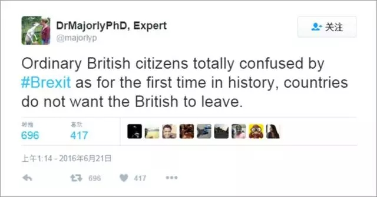
英国人自己可能笑不出来，他们已经在担心英国毁灭的情形。
英国脱欧，是反建制、反精英、反知识分子的胜利。这不仅仅是英国特有的现象，全球范围内都有类似的思潮，比如在欧洲很多国家都有极右翼党派崛起甚至掌权。
我印象最深刻的评论，来自《金融时报》网站上的一则读者留言。
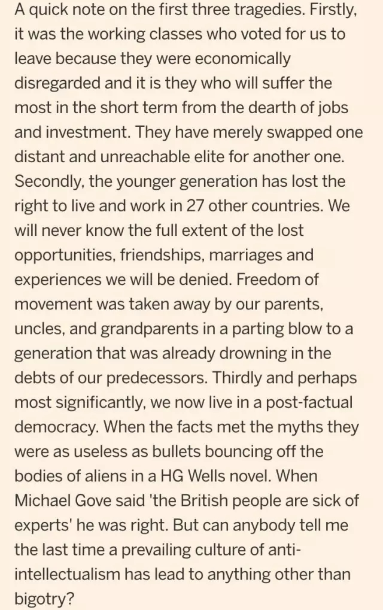
他主要说了三点：首先，这是工人阶级投票选择脱欧，因为他们的经济利益被整个社会所忽视了；但是，脱欧将造成的工作机会和投资减少，在短时期内会遭受最大影响的恰恰也是工人阶级。
其次，年轻一代的英国人从此失去了在其他27个国家自由生活和工作的权利。我们永远也无法估算出我们将会失去的发展机会、友情、婚姻和人生经验到底有多少。我们的前辈们已经让我们这一代人深陷债海，现在我们的父母、叔叔阿姨、祖父母们又剥夺了我们自由搬迁的权利。
第三点，也可能是最重要的一点，我们已经进入了一个‘后事实’(post-factual)的民主社会，当事实遇上政客杜撰的宣传时，事实就像是英国作家赫伯特·乔治·威尔斯的科幻小说里所描述的从外星人尸体上弹回的子弹那样毫无用处。英国外交大臣戈夫(Michael Gove)说，英国人已经厌倦了专家。他说的没错。可是，有谁能告诉我，有哪个反精英、反知识分子的社会文化潮流，除了导致自大傲慢以外还取得了别的成就？
在美国，同样的思潮最明显的表现就是特朗普在总统大选中的一呼百应。所以这次英国脱欧成功，很多美国人认为同样给美国敲响了警钟。
“英国脱欧给美国的一个教训是，如果你觉得特朗普不会赢，那你的想法是懒惰、自大和极其危险的。”
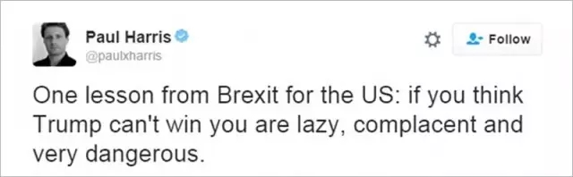
如果这就是世界的未来，还真是让人不寒而栗啊。
很多人也在思考，全民公投到底是不是最好的民主形式？这是不是一种多数人的暴政？斯诺登的这条推被转发了25000多次，他说，“不管脱欧公投最后的结果如何，投票结果都表明了在世界上任何一个国家，都可能会出现一半的人投票反对自己利益的情况。这是一个值得思考的教训。”
丘吉尔的这段话今天也传播很广，“对民主最好的反对，就是和任何一个普通选民交谈五分钟。”
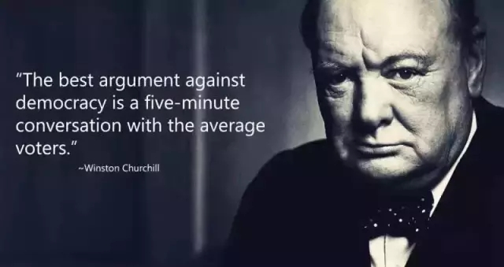
最后再来看看今天英国主要报纸杂志的头版和封面。
经济学人：悲剧性的分手。
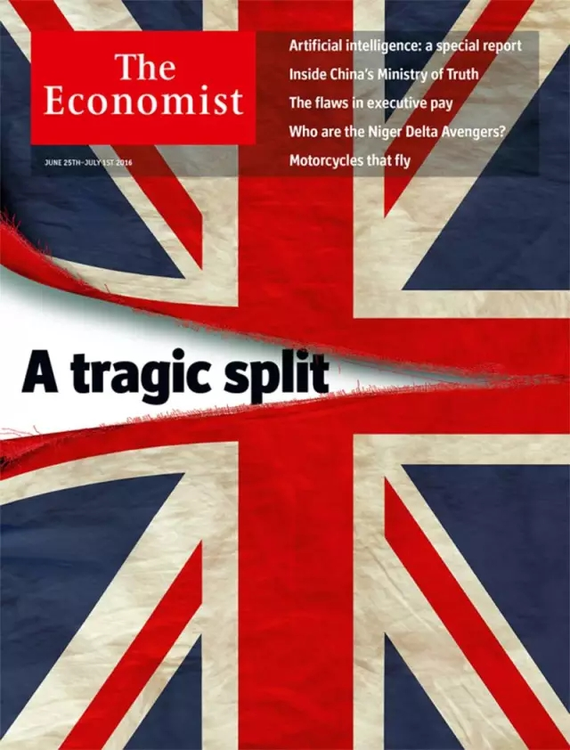
独立报：我们不费一颗子弹就取得了胜利。
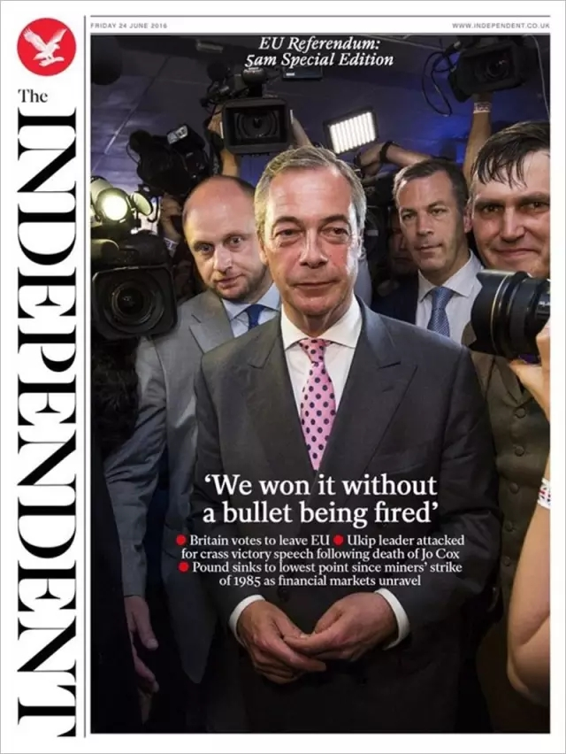
每日邮报：我们脱了。
泰晤士报。
每日纪事报：颤抖吧，我们正在脱的路上。
脱。
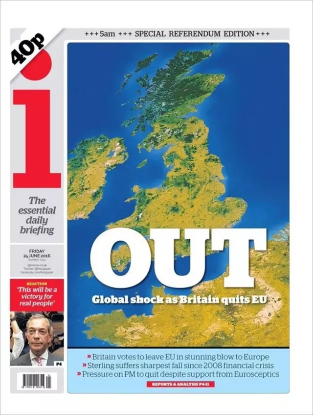
每日镜报：我们脱了。
地铁报：英国撕裂。
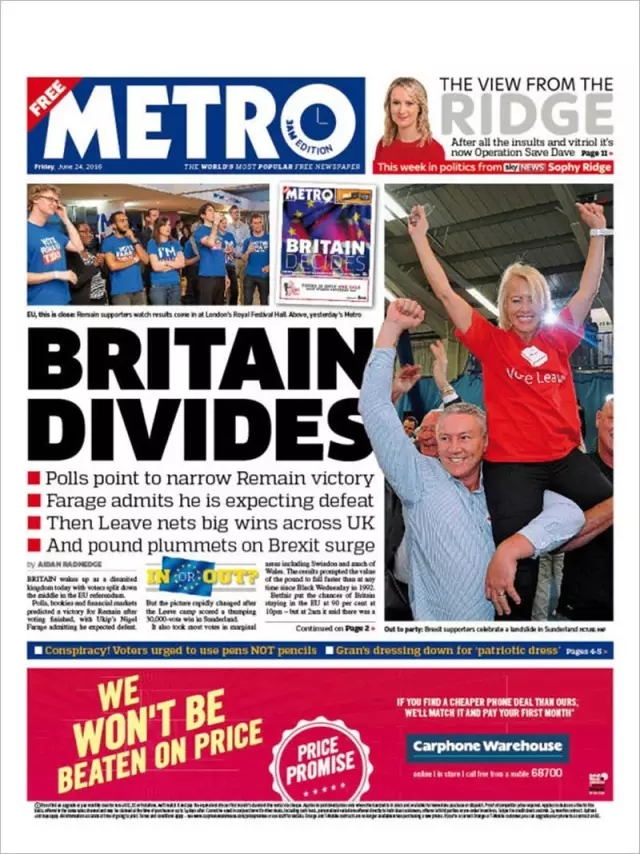
每日快报：不列颠历史性的一天。
最后这张图，还真是让人看得伤感啊。
来源：假装在纽约